Het scapulier van Onze Lieve Vrouw van de Berg Karmel
De mantel van barmhartigheid in leven en sterven
De devotie tot het scapulier laat een machtige stroom van geestelijke en tijdelijke genaden de wereld in vloeien. Paus Pius XII
Deze brochure van de Mariaanse Priester- en Lekenbeweging stelt het bruine scapulier van Onze Lieve Vrouw van de Berg Karmel voor: zijn bijbelse wortels op de Karmel, de grote belofte aan de H. Simon Stock, het zaterdagprivilege, talrijke genadebewijzen, alsook de kerkelijke ritus van zegening en oplegging.
Inhoud
- Voorwoord
- De berg van de Moeder Gods
- Een profeet als vuur
- Het kleine wolkje
- De grote belofte
- Verlangen naar het kleed van de hemel
- Deel aan de familieschat
- Hoe kan ik de beloften verkrijgen?
- Het zaterdagprivilege
- In de school van Maria
- De veiligheidsgordel van de hemel
- Herinnering aan de scapuliergenade
- De mantel van barmhartigheid
- Dragers van het ware geloof
- Genadebewijzen door het scapulier
- Zegening en oplegging van het bruine scapulier
- Gebed tot de Koningin van de Karmel
Voorwoord
Miljoenen katholieken dragen met eerbied en vertrouwen het heilige scapulier van Onze Lieve Vrouw van de Berg Karmel op hun hart.
Het is een bijzonder teken van de wijding aan het Onbevlekte Hart van Maria en een onderpand van het eeuwige heil, zoals de Moeder Gods het aan de H. Simon Stock heeft geopenbaard. Maria weet heel goed in welke gevaren en moeilijkheden haar kinderen dag in dag uit verkeren. Daarom reikt zij hun, tot bescherming van lichaam en ziel, dit „kleine habijt van de hemel” aan, dat doordrenkt is van de grote genadeschatten van de Karmelietenorde. Met de woorden van de Heilige Schrift nodigt zij elk van haar kinderen liefdevol uit: Draag mij als een zegel op uw hart! (Hgl 8,6)
Veel mensen zouden het heilige scapulier met vreugde ontvangen als zij wisten welke buitengewone beloften eraan verbonden zijn. In die zin heeft de Mariaanse Priester- en Lekenbeweging zich tot taak gesteld deze devotie in dienst van de Moeder Gods tot zegen van vele mensen te verspreiden en nieuw leven in te blazen.
Van harte verheug ik mij over deze kleine brochure en wens allen die haar zullen lezen overvloedige genaden toe van Onze Lieve Vrouw van de Berg Karmel.
+ Athanasius Schneider, hulpbisschop van het aartsbisdom van de Heilige Maria in Astana, op het feest van Onze Lieve Vrouw van de Berg Karmel, 16.07.2025 in het Heilig Jaar
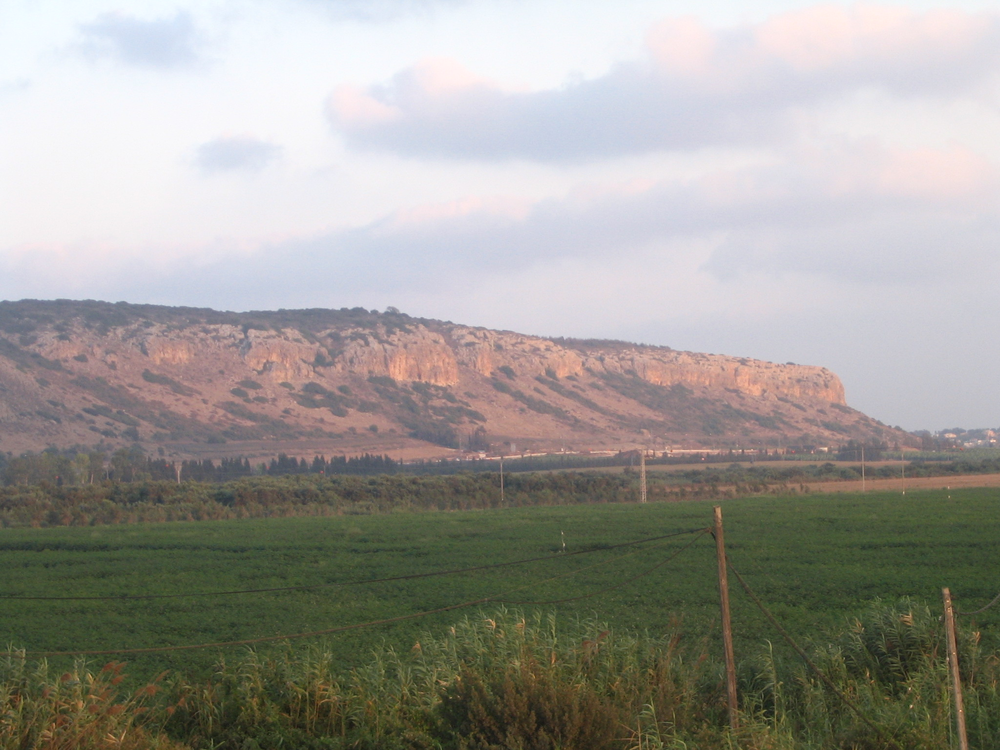
Berg Karmel
De berg van de Moeder Gods
De Karmel is een heilige berg.
Reeds in de Heilige Schrift wordt de genadevolle schoonheid van de bergketen van het Karmelgebergte, gelegen tussen de Middellandse Zee en de vlakte van Jizreel, geprezen. Je hoofd is als de Karmel (Hgl 7,6), zegt de bruidegom in het Hooglied en prijst daarmee de schoonheid van zijn geliefde.
Het is inderdaad zo dat de berg Karmel in de Bijbel een symbool van schoonheid en vruchtbaarheid is geworden. Zij wordt getoond met de glorie van de Libanon, de luister van de Karmel en de Saron. (Jes 35,2)
De schoonheid en heiligheid die als kenmerkende eigenschappen aan de Karmel worden toegeschreven, komen volgens de uitleg van de kerkvaders samen in de persoon van Maria, de Moeder Gods, die op grond van haar plaats in de heilsgeschiedenis boven alle schepselen verheven is.
En deze wonderbare Moeder en Koningin van de Karmel reikt haar zo hulpbehoevende kinderen als teken van haar bijzondere bescherming het heilige scapulier aan, om hen veilig naar de berg van de eeuwige verheerlijking te leiden.
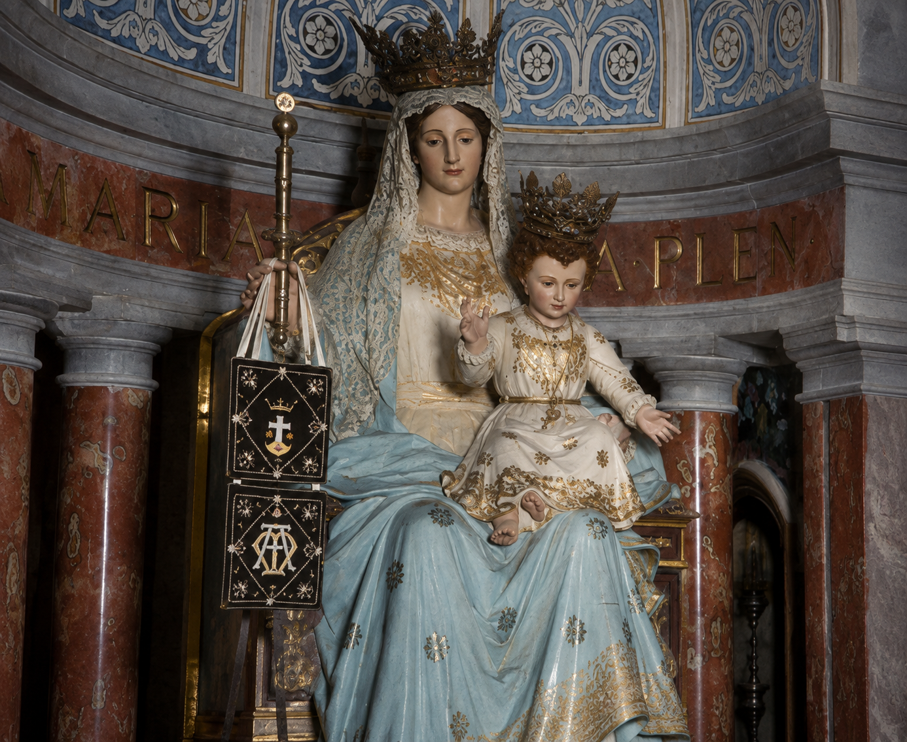
Beeld van de Moeder Gods in de basiliek op de berg Karmel
Je bent volmaakt schoon, mijn vriendin, zonder enig gebrek. Hgl 4,7
Draag mij als een zegel op uw hart, als een zegel aan uw arm. Hgl 8,6
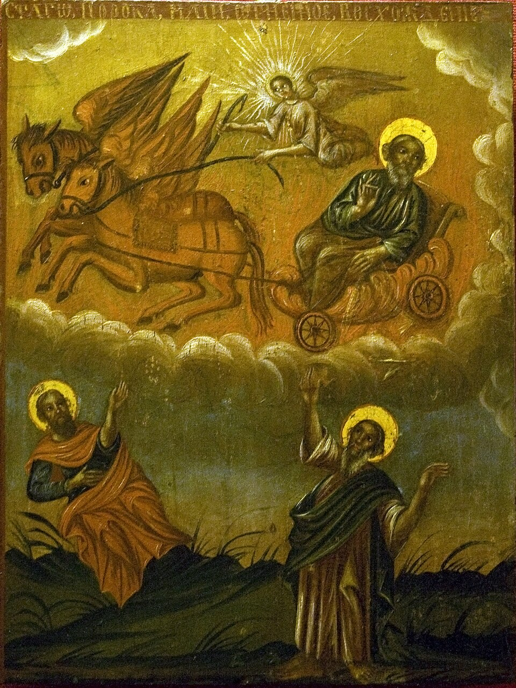
Elia
Een profeet als vuur
De berg Karmel en zijn geschiedenis zijn onlosmakelijk verbonden met de machtige roeping van de profeet Elia, over wie in het eerste deel van het Speculum Carmelitani van 1680 staat: Elia, een allerheiligste profeet, een hogepriester, de eerste monnik en stichter van het monnikendom; heraut, vereerder en navolger van de Godbarende; Christus' toekomstige voorloper, apostel en martelaar.
Aan het begin van zijn zending staat het woord van de Heer, die hem opdraagt: Vertrek van hier en ga naar het oosten en houd u verborgen in het dal van de Kerit … (1 Kon 17,2-3) Elia moest eerst in de loutering van de eenzaamheid met de sikkel van het gebed en de boete het zaad oogsten dat hij later door zijn vurige preken in de harten van het dwalende volk zou uitstrooien.
Hier ontsluit zich voor ons een diepe geestelijke werkelijkheid: door elk contact met God in het gebed en in de bewuste vereniging van onze wil met Zijn Goddelijke Wil oogsten wij hemels zaad, dat niet alleen op de akker van onze eigen ziel overvloedig vrucht draagt, maar ook op de zielenakker van alle mensen die God ons heeft toevertrouwd.
Vertrek van hier en ga naar het oosten en houd u verborgen in het dal van de Kerit, die in de Jordaan uitmondt. Uit de beek kunt ge drinken en aan de raven heb Ik bevolen u daar van voedsel te voorzien.1 1 Kon 17,2-4
1 Het „Vertrek van hier” en het „Houd u verborgen” moeten een verwijzing zijn naar de mens die zich van de vergankelijke wereld moet losmaken om met hulp van de genade de deugden te beoefenen waardoor hij tot de zuiverheid van het hart komt. Het „Ga naar het oosten” roept op tot de strijd tegen de natuurlijke begeerlijkheid van het vlees, en het „Houd u verborgen in het dal van de Kerit” betekent het zich afkeren van de drukte van de mensen en het zich losmaken van de zonde door de beoefening van de liefde. Zo kan de mens uit de „beek” van zijn hart drinken, doordat hij in staat wordt de aanwezigheid van God in zijn binnenste te smaken. Wie zo – naar het woord van Jezus – eerst het Rijk Gods zoekt (vgl. Lk 12,31), voor hem zendt God de raven van de lichamelijke en geestelijke weldoeners, die hem het nodige brood voor lichaam en ziel aanreiken. Vgl. Der Karmel im Heiligen Land, uitg. door Silvano Giordano OCD, Wenen 2025, p. 38.
Tot op de dag van vandaag is Elia een bijzonder voorbeeld voor allen die een aan God gewijd leven in de verborgenheid leiden, evenals voor alle priesters en bisschoppen die door God geroepen zijn om door hun onverschrokken getuigenis voor het ware katholieke geloof de Kerk te sterken en te verdedigen.
Op zo'n offer van moedige belijdenis rust goddelijk welbehagen en het trekt overvloedige zegen uit de hemel neer.
In de volgende scène over Elia, het „vuuroordeel” op de Karmel, wordt ons dit op ontroerende wijze voor ogen gesteld.
In de tijd van koning Achab van Israël (ca. 874 v. Chr.) heerste onder het volk grote verwarring door de vermenging van verschillende godsdiensten. Dit onheil werd vooral veroorzaakt door Izebel, de eigenzinnige en machtbeluste echtgenote van de koning. Zij liep de Baäls achterna en liet de profeten van de Heer ombrengen, waardoor het geloof in Jahwe steeds meer instortte. In deze grote nood zond God de profeet Elia om de Israëlieten terug te brengen tot een echte relatie met God en tot trouw aan het Verbond.
Het boek Jezus Sirach noemt Elia een profeet als vuur, (Sir 48,1) wiens naam naar zijn programma verwijst, want Elia betekent: „Mijn God is werkelijk de Heer.” Op het woord van de Heer verzamelde hij het hele volk op de berg Karmel, om in de verheven naam van Jahwe de nietigheid van de valse afgoden aan te tonen. Net als de heilige aartsengel Michaël verhief deze moedige man Gods zijn stem en riep uit: Hoe lang blijft u nog op twee gedachten hinken? Als Jahwe God is, volgt Hem dan; is het Baäl, volgt dan Baäl. (1 Kon 18,21)
De onverschrokken profeet stond geheel alleen tegenover de 450 priesters van Baäl en stelde hun voor een altaar voor Jahwe en een altaar voor Baäl op te richten. Dan zou afwisselend Jahwe en Baäl worden aangeroepen. De God die door vuur antwoordt is de ware God! (1 Kon 18,24) Van de morgen tot de middag riepen de profeten van Baäl nu hun nietige afgod aan en werden daarbij steeds razender, want er klonk geen geluid en er kwam geen antwoord. (1 Kon 18,26)
Toen begon Elia het offeraltaar voor Jahwe gereed te maken. Na een korte en bondige aanroeping sloeg het vuur van Jahwe neer, verteerde het brandoffer, het hout, de stenen en het stof; het likte zelfs het water in de geul op. (1 Kon 18,38) Nu had de waarheid gezegevierd en de omstanders werden gedwongen de blindheid van hun hart en de dwaasheid van hun gedrag toe te geven. Zij wierpen zich met het aangezicht ter aarde en riepen: Jahwe is de ware God! Jahwe is de ware God! (1 Kon 18,39) De priesters van Baäl liet de profeet naar de beek Kison voeren en daar doden.2
2 Zoals Elia in het bijzijn van koning Achab en het volk Israël zijn tegenstanders doodde, zo heeft ook onze Verlosser tegen de vorst van de wereld en zijn aanhangers gestreden en hen door Zijn lijden en kruis overwonnen. En Hij wijdt het altaar van de Heer, dat verbrijzeld was, d.w.z. de harten van de gelovigen, die Hij van het vuil van de zonde reinigt, tot een offerplaats voor God. (Albert Ohlmeyer, Elias Fürst der Propheten, Imprimatur: Freiburg im Breisgau, 20.12.1962)
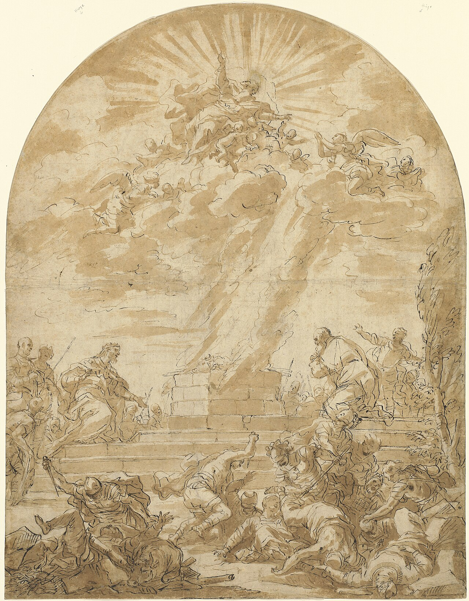
De God die door vuur antwoordt is de ware God! 1 Kon 18,24
Het kleine wolkje
Op de hoogten van de Karmel had Elia, de vorst der profeten, een luisterrijke overwinning behaald. De mannen van Israël hebben opnieuw de knie gebogen voor de aanbiddenswaardige majesteit van God en konden door het overweldigende vuurwonder teruggewonnen worden voor de trouw aan hun Verbondsgod. Elia, die een heilige en een man van geloof was, wist wel dat alle kracht van God kwam, en zo werd hij door zijn succes alleen nog nederiger.
Stil en getrouw aan zijn zending begaf de man Gods zich na de grote wedstrijd met de profeten van Baäl op weg naar de top van de berg Karmel. In voorbede en aanbidding verzonken, het hoofd tussen de knieën gebogen, smeekte hij zijn God om de verlangde regen. Ten slotte zond hij zijn dienaar uit om aan de horizon uit te kijken. En inderdaad, de zevende keer ontwaarde deze een wolkje, zo klein als een mensenhand, dat zich boven de zee verhief.
Dit kleine wolkje trok steeds verder op en opende zich ten slotte boven het verdorde land en schonk het de verlossende regen.
De karmelitaanse traditie zag in deze episode uit het verhaal van Elia (1 Kon 18,36-41) altijd al een verhulde aankondiging van de Maagd Maria.3
Deze voorafbeelding bevat reeds alle elementen van de karmelitaanse roeping: het gelovige en volhardende gebed in de stilte, de voorbede voor de hulpbehoevende mensheid en de verkondiging van de goddelijke zegen. En in het hart van deze roeping vindt men de geheimzinnige aanwezigheid van de allerzuiverste Maagd Maria, de koninklijke uitdeelster van alle genaden.4
3 In het visioen van de wolk neemt Maria als het ware bezit van de hoogte van de Karmel als haar berg en wijdt zij de profeet tot de eerste Karmeliet, d.w.z. tot de ware bewoner van de berg Karmel, die gehouden is aan de wet van deze berg, namelijk de mariale, de verering en navolging van Maria. Maria toont zich hier reeds als Koningin van de Karmel, die gerechtigd is in haar gebied te regeren. (Das Kleid vom Himmel van Gert Josef Weisensee, Lauerz 2000)
4 Vgl. Philippe de Jésus-Marie OCD, Das Geheimnis des Karmel, durch das Skapulier mit Maria leben, Wenen 2021.
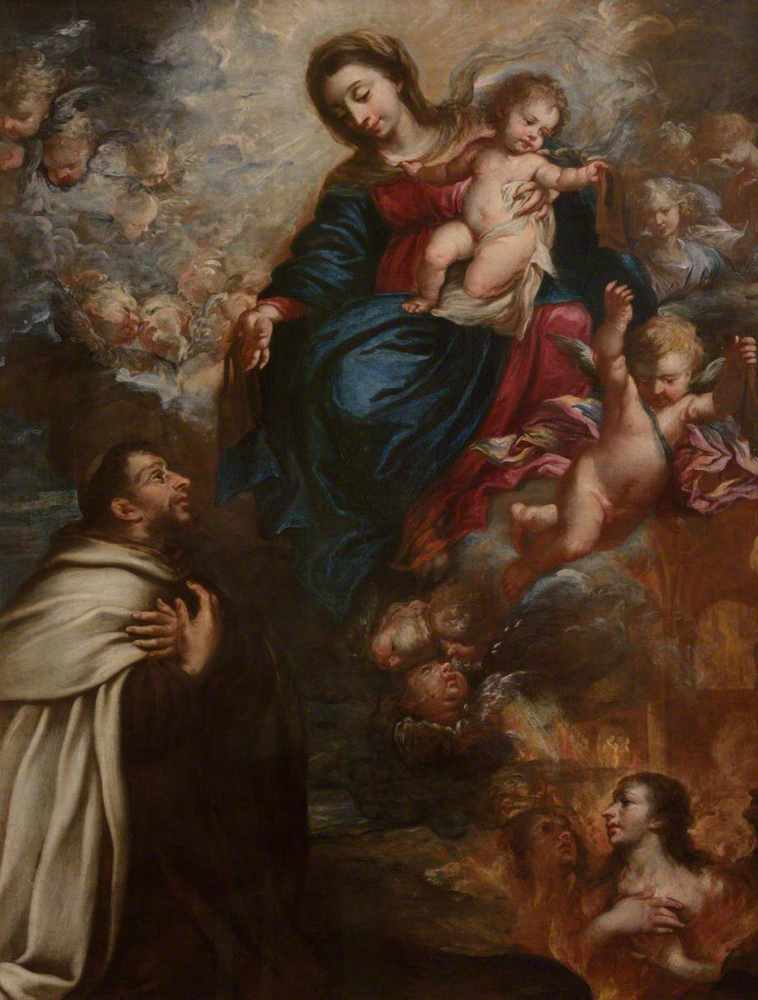
Maria overhandigt het scapulier aan de H. Simon Stock.
De grote belofte
In de 12e eeuw trokken kluizenaars zich terug op de berg Karmel en stichtten de Karmelietenorde om onder de bescherming van de Moeder Gods een leven van contemplatie te leiden. Vanwege de zware vervolgingen en nood die over de orde kwamen, smeekte de H. Simon Stock, die als 6e generaal-prior aan het hoofd van de Karmelieten stond, onophoudelijk tot de Moeder Gods dat zij zich over de orde zou ontfermen en een bijzonder onderpand van haar bescherming zou schenken.
De door de Kerk bevestigde getuigenissen berichten hierover als volgt:
Vaak smeekte (Simon Stock) de Moeder Gods, de roemrijke Maagd Maria, de patrones van de orde, om aan de broeders die haar naam dragen een privilege te verlenen. Elke dag sprak hij in zijn vurige gebeden: Bloem van de Karmel, vruchtbare wijnstok, glans van de hemel, Maagd Maria, U enige. Zoete Moeder, U die geen man hebt gekend, geef de kinderen van de Karmel deel aan Uw voorrechten, o Ster der Zee.
En op een dag, terwijl hij juist toegewijd dit gebed sprak, verscheen hem de Moeder Gods, de roemrijke Maagd Maria, vergezeld van een grote schare engelen en met het scapulier van de orde in haar handen. En zij zei tot hem: Neem, mijn geliefde zoon, dit scapulier van uw orde. Het is het bijzondere genadeteken dat ik voor u en de kinderen van de berg Karmel heb afgesmeekt. Wie met dit kleed bekleed sterft, zal van de eeuwige vlammen gevrijwaard blijven. Het is een teken van heil, een bescherming in gevaren, een onderpand van vrede en van een eeuwig verbond.5
Ter herinnering aan deze wonderbare verschijning van de Moeder Gods, die zich op 16 juli 1251 voltrok, viert de Kerk op die dag het feest van Onze Lieve Vrouw van de Berg Karmel (scapulierfeest).
5 Ibid. alsook Das Kleid vom Himmel.
Verlangen naar het kleed van de hemel
Toen deze kostbare belofte van de Moeder Gods bekend werd, wilden ook de gelovigen in de wereld dit onschatbare onderpand van een goede dood bezitten. Pausen en kardinalen, keizers en koningen, bisschoppen en priesters en miljoenen gelovigen hebben zich met dit kleed van Maria bekleed om zich van haar bijzondere bescherming in leven en sterven te verzekeren en deel te krijgen aan de talrijke genaden en privileges.
De H. Simon Stock richtte de door de Apostolische Stoel bevestigde broederschap op ter ere van Onze Lieve Vrouw van de Berg Karmel, die door talrijke pausen werd aanbevolen en met kostbare aflaten werd verrijkt. Ontelbare mensen hebben door het heilige scapulier redding verkregen in ziekten, bij branden, in levensgevaar door verdrinking, bij dodelijke verwondingen, in gevaren van verleiding en in vele andere nooden, zowel lichamelijke als geestelijke, zoals een groot aantal voorbeelden in de geschiedenis van de broederschap getuigen.6
Ook ik draag al lange tijd het scapulier van de Karmel op mijn hart.7 H. Johannes Paulus II
6 Das Schutzkleid Mariä van pater Thaddaeus Ballsieper O. Carm. Imprimatur: Bamberg 1958.
7 Toen paus Johannes Paulus II op 13 mei 1981 werd neergeschoten, verzocht hij vóór de operatie ter verwijdering van de kogel de artsen zijn scapulier niet te verwijderen. (Kämpfer des Rosenkranzes van Donald H. Calloway MIC, Kißlegg 2024, Imprimatur: 31 mei 2016)
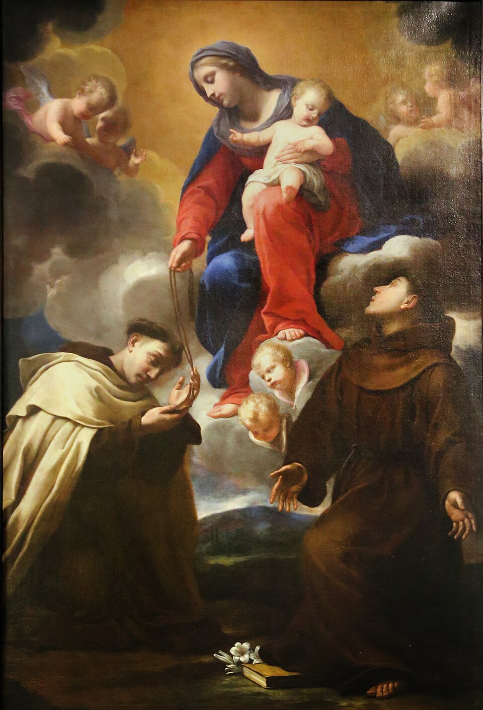
Verheerlijking van Maria in de hemel te midden van de heiligen van de Karmelietenorde
Deel aan de familieschat
Het scapulier is de „miniatuuruitgave” van het habijt van een Karmeliet en daarmee ook een teken van broeder- en zusterlijke verbondenheid, omdat men er in de familie van de Karmel door wordt opgenomen. In deze familie krijgt men – samen met de broeders en zusters met wie men nog hier op aarde onderweg is – deel aan de spirituele schat van alle heiligen van de Karmel, of zij nu heilig verklaard zijn of niet.
Evenzo wordt men met de oplegging van het scapulier ook lid van de broederschap en krijgt men deel aan de vele gebeden, goede werken en verdiensten van de miljoenen leden van de broederschap over de hele wereld.
H. Theresia van het Kind Jezus als kind (1881, vóór haar intrede in het klooster)
Wat ben ik gelukkig dat je met het heilige scapulier bent bekleed! Dit is een zeker teken van voorbestemming, en ben je daardoor niet ook nog inniger verbonden met je kleine zusters in de Karmel? Uit een brief van de H. Theresia van het Kind Jezus aan haar vriendin Céline Maudelonde
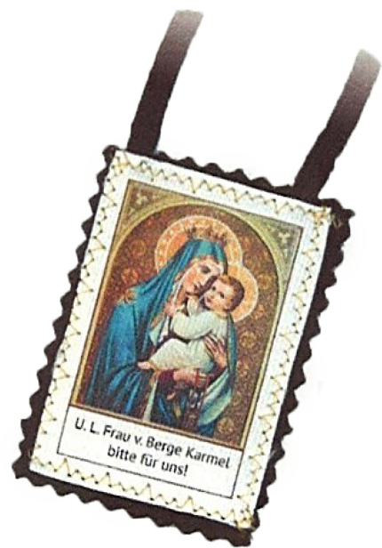
Bruin scapulier
Hoe kan ik de beloften verkrijgen?
Om de bijzondere beloften die aan het dragen van het scapulier verbonden zijn te verkrijgen, moet men door een priester met het gezegende scapulier bekleed worden en dit dag en nacht om de hals dragen, zodat het ene deel op de borst en het andere op de rug rust.8
Ter voorbereiding op de ontvangst van het bruine scapulier is het aan te bevelen een oprechte biecht af te leggen en het vaste voornemen te maken de Moeder Gods innig te vereren, vooral door het rozenkransgebed.
8 Het scapulier moet bestaan uit twee vierkante stukken wollen stof, die aan beide uiteinden met twee koorden of linten met elkaar verbonden worden. Wanneer iemand om begrijpelijke redenen het stoffen scapulier niet kan dragen, bestaat de mogelijkheid een daartoe gezegende scapuliermedaille te dragen. Deze werd vanwege de deels moeilijke klimatologische omstandigheden in de missiegebieden in 1910 door paus Pius X toegestaan. Er moet echter bedacht worden dat de Moeder Gods uitdrukkelijk over het „kleed” sprak en paus Benedictus XV het kussen van het stoffen scapulier met een aflaat van 500 dagen verbond, om de dragers van het scapulier op het belang van het stoffen scapulier te wijzen. Wanneer het scapulier vervangen moet worden, hoeft het niet opnieuw door een priester te worden opgelegd.
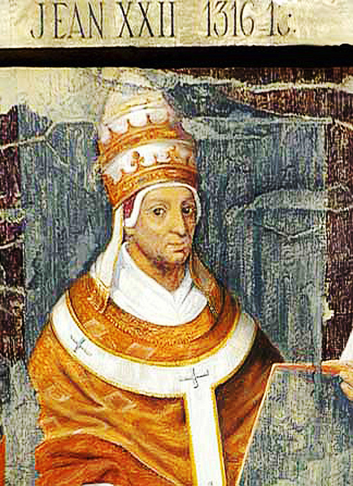
Paus Johannes XXII
Het zaterdagprivilege
Ongeveer 70 jaar na de beloften van de Moeder Gods aan de H. Simon Stock openbaarde de allerzaligste Maagd Maria aan paus Johannes XXII het zogenaamde zaterdagprivilege, waarover zij in een verschijning tot hem sprak: Wie ook in deze orde intreedt en zich met overgave aan deze levenswijze wijdt, zal eeuwig gered en van de pijn van zijn schuld bevrijd worden. En indien zij (de ordebroeders) op de dag van hun heengaan in het vagevuur terechtkomen, zal ik, de Moeder van de Genade, op de zaterdag na hun dood daarheen afdalen en hen die ik daar vind, bevrijden en naar de heilige berg en naar het eeuwige leven voeren.
Paus Johannes XXII maakte deze genade bekend door middel van een eigenhandig opgestelde bul van 3 maart 1322 te Avignon. Deze bul wordt wegens de voor de zaterdag toegezegde bevrijding „Bulla Sabbatina” genoemd en werd door meerdere pausen bevestigd.
De belofte luidt
De in de genade van God overledenen zullen op de eerstvolgende zaterdag na hun dood uit het vagevuur bevrijd worden, indien zij in hun leven het scapulier gedragen, de kuisheid overeenkomstig hun staat in acht genomen,9 het klein officie van de Heilige Maagd dagelijks gebeden10 of in plaats daarvan op alle woensdagen en zaterdagen zich van vleesspijzen onthouden hebben.11
Maria, de mildste Moeder, zal het ook niet nalaten haar kinderen, die in het vagevuur de straffen voor hun zonden uitboeten, op haar voorspraak bij God, volgens het zogenaamde zaterdagprivilege, zo spoedig mogelijk naar het eeuwige vaderland te voeren. Paus Pius XII
9 De kuisheid overeenkomstig de staat van leven vormt een wezenlijk bestanddeel van de christelijke liefde, doordat zij ons behoedt voor elk bezitterig gedrag jegens de naaste en ons veeleer ertoe brengt hem met alle eerbied te bejegenen die hem als kind van God toekomt. (Das Geheimnis des Karmel)
10 Tegenwoordig rekent men ook de rozenkrans tot de gebeden die het klein officie van de Heilige Maagd kunnen vervangen.
11 Tragt das Skapulier! van Paulus Deusdedit, Lauerz 1996-2004.
Maria pleit bij haar Zoon voor de leden van haar orde:
Mijn Zoon, ter wille van deze heilige borst die U gevoed heeft, ontferm U over mijn kinderen en bevrijd hen van de kwellingen.
– Moeder, het geschiede zoals U gevraagd hebt. Opschrift van een Karmel-votiefbeeld (het beeld is in de gedrukte brochure afgebeeld)
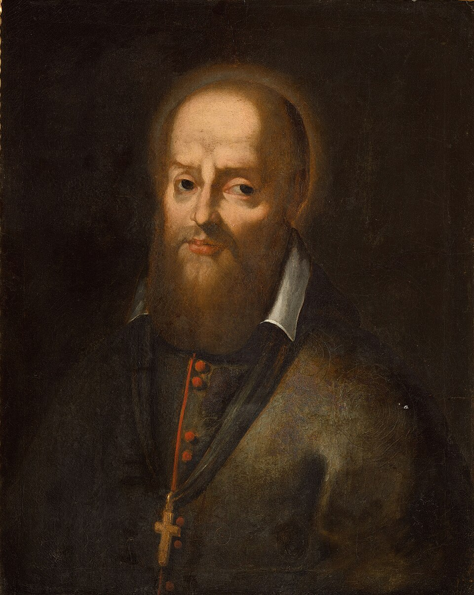
H. Franciscus van Sales
In de school van Maria
Niets is gering wanneer men zoals de Maagd Maria met Zijn Hart in de tegenwoordigheid van God leeft en luistert naar Zijn heilige wil voor ons leven. Elke gebeurtenis, elke ontmoeting draagt vrucht voor de eeuwigheid. De H. Franciscus van Sales zei graag dat elk ogenblik ons een bevel van God overbrengt en naar de eeuwigheid terugkeert met wat wij ervan gemaakt hebben.
Op onze arme menselijke wegen kunnen wij voor onszelf en anderen dingen bewerken die eeuwigheidswaarde hebben. Eeuwig is in ons wat van God komt – het leven van God, het leven van de kinderen van God, dat door de Heilige Geest in onze harten is uitgegoten. En zo leert Maria ons, wanneer zij ons het scapulier oplegt, dat de ware liefde zich steeds in de kleine handelingen van het dagelijks leven moet uitdrukken: een glimlach, een klein offer of een ongemak dat men uit liefde voor God verdraagt, een daad van geduld, van nederigheid … Er zijn zo veel mogelijkheden om ons „Ja”, ons „Fiat”, als antwoord op de roep van God uit te spreken.
In zijn boek Het Geheim van Maria schrijft de H. Lodewijk Maria Grignion de Montfort: Men moet al zijn handelingen voor Maria verrichten (…) en vaak in het diepst van het hart herhalen: ‚O mijn lieve Meesteres, het is voor U wanneer ik hierheen of daarheen ga, wanneer ik dit of dat doe, wanneer ik deze of gene tegenspoed of belediging verdraag!’
En in de Raadgevingen en herinneringen van de H. Theresia van het Kind Jezus berichtte haar zuster Céline ons hoezeer Theresia in de geest en in de bedoelingen van Maria was doorgedrongen: Op een middag, om drie uur, merkte ik dat zij bad, en ik vroeg wat zij zei: Ik bid een weesgegroet om mijn werk aan de Heilige Maagd op te dragen. Ik heb de gewoonte aangenomen zo te handelen, telkens wanneer ik een werk begin.12
12 Das Geheimnis des Karmel.
De veiligheidsgordel van de hemel
Het Onbevlekte Hart van Maria klopt met elke vezel voor God en het heil van de mensenkinderen. Daarom wil de allerzaligste Maagd Maria ons voor onze drie ergste vijanden – de wereld, de duivel en onze eigen begeerlijkheid – in veiligheid brengen. Ja, zij wil ons als het ware met een „hemelse veiligheidsgordel” stevig aan haar moederlijk hart binden, opdat wij op de gevaarvolle reis naar de eeuwigheid niet ten val komen.
In zijn heldere taal, die geheel doordrongen is van de ijver voor de eer van de Immaculata, verklaart de H. Maximiliaan M. Kolbe: Het scapulier, de rozenkrans en de Wonderdadige Medaille: dat zijn drie dingen die de Immaculata zelf voor het heil van de mensen aangeboden heeft.
Om deze reden richt Maria in haar boodschappen onze blik steeds weer op ons heil en de laatste dingen, waarover tegenwoordig zo weinig gepreekt wordt: de dood, het oordeel, het vagevuur, de hel en het paradijs.
En toch zijn het juist deze werkelijkheden waartoe het scapulier ons wil terugvoeren. Hoe wil men een diep, authentiek christelijk leven leiden wanneer men de zin en het doel van het menselijk bestaan met zijn eeuwigheidsdimensie vergeet? Wij zijn geroepen het leven te kiezen, dus ons voor God te beslissen. Maar wij kunnen dit vrije geschenk ook afwijzen en ons voor de oneindige barmhartigheid van God sluiten.
De taak van Maria bestaat erin ons in het beslissende uur van de dood te helpen ons met vertrouwen tot onze Vader te wenden en Hem – naar het voorbeeld van de goede moordenaar – om genade te vragen. En bovendien vraagt zij God dat wij ons reeds vandaag bekeren!13
13 Vgl. ibid.
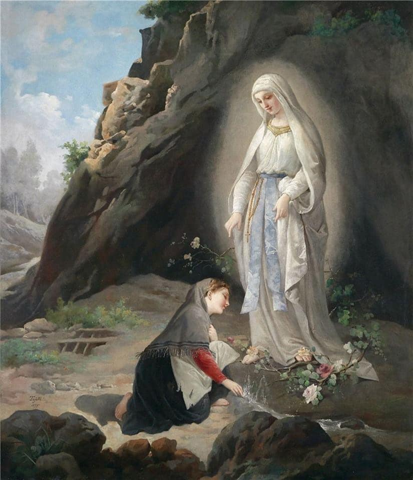
Onze Lieve Vrouw van Lourdes / H. Bernadette
Herinnering aan de scapuliergenade
Omdat de hemel onze menselijke vergeetachtigheid kent, heeft de Voorzienigheid beschikt dat de beide grote Mariaverschijningen van de 19e en 20e eeuw – Lourdes en Fatima – elk in het teken van het scapulier hun afsluiting vonden.
Inderdaad was het op 16 juli 1858, het feest van Onze Lieve Vrouw van de Berg Karmel, dat Maria voor het laatst in de grot van Massabielle verschenen was. Op die dag, zo bericht Bernadette ons, bleef de Maagd in stilte, en toonde zich daarbij tegelijk toch zo schoon als nooit tevoren. Maria, de Koningin en Sieraad van de Karmel, bekroont de reeks van achttien verschijningen met de herinnering aan haar aanwezigheid in de Karmelietenorde.
Op zeer vergelijkbare wijze wilde Maria zich ook aan de herderskinderen in Fatima – toen zij hun op 13 oktober 1917 voor het laatst verscheen – tonen als Onze Lieve Vrouw van de Berg Karmel, bekleed met het scapulier.
Interview met Zr. Lúcia
Het is leerzaam het interview met Zr. Lúcia te lezen, dat in het jaar 1950 aan pater Howard Rafferty werd verleend:
Pater Howard: In veel boeken over Fatima geven de auteurs niet toe dat het scapulier een integraal bestanddeel van de verschijningen is.
Lúcia: Ah, zij hebben ongelijk!
P. Howard vraagt nu welke betekenis aan de verschijning van Onze Lieve Vrouw moet worden toegekend wanneer de Maagd het scapulier in haar handen draagt.
Lúcia: Zij wilde daarmee te verstaan geven dat zij wenste dat allen het scapulier dragen. Zij voegde eraan toe: De Heilige Vader heeft het aan de hele wereld gezegd en verklaard dat het scapulier het teken van de wijding aan het Onbevlekte Hart van Maria is. Niemand kan zich er vandaag van uitsluiten.14
Pater Howard vraagt nu aan Zr. Lúcia of het scapulier onmisbaar is om de wensen van Onze Lieve Vrouw van Fatima te vervullen.
Lúcia: Ja!
Pater Howard: Zou u zeggen dat het even onmisbaar is als de rozenkrans?
Lúcia: De rozenkrans en het scapulier zijn onlosmakelijk verbonden!15
14 Allocutie van Pius XII, naar aanleiding van het 700-jarig jubileum van het scapulier.
15 Tragt das Skapulier!
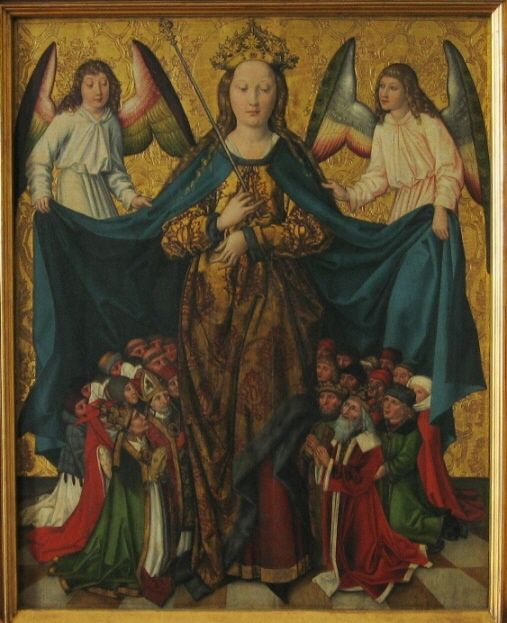
Mantel van barmhartigheid
De mantel van barmhartigheid
Met behulp van het scapulier, waarmee wij als het ware Jezus en Maria aantrekken, plaatsen wij ons in de stroom van liefde die deze beide heiligste Harten verbindt. Zo worden wij ingeleid in de vertrouwdheid met de drie-enige God, opdat wij in het hart van de Kerk, onze Moeder, de liefde zijn en ons kleine leven haar mystieke lichaam nieuwe genade en kracht schenkt.
Maar wat betekent het concreet voor ons Jezus en Maria „aan te trekken”? Het betekent in hun leven binnen te treden, zich hun voelen, willen en handelen, hun liefde en barmhartigheid eigen te maken. Wij moeten dus ons hart bekleden met het denken van Jezus en Maria en ons ontdoen van de lompen van onze vroegere zonden en ongeordende hartstochten. Evenzo moeten wij al onze maskers laten vallen, alle huichelachtige en leugenachtige vermommingen, om zo alleen nog het kleed van de waarheid van Christus te dragen. En wanneer wij in onze menselijke zwakheid telkens weer struikelen en vallen, dan kan het scapulier voor ons worden tot een ware „mantel van barmhartigheid”.16
De Maagd Maria drukt haar gebroken kinderen aan haar Onbevlekt Hart en verzoent hen met haar Goddelijke Zoon.17 Maar ook wijzelf moeten deze barmhartige liefde, die wij dagelijks opnieuw mogen ontvangen, doorstromen laten naar alle mensen die God ons heeft toevertrouwd, vooral naar hen die Zijn barmhartigheid het meest nodig hebben. En wanneer wij het scapulier aan ons hart drukken en telkens weer het beeld van Maria kussen, kunnen wij dat ook als plaatsvervanger voor anderen doen, om hen daardoor in de mantel van barmhartigheid te hullen, door hen geestelijkerwijs met het scapulier te bekleden.
16 Vgl. Das Geheimnis des Karmel, p. 113.
17 Aansluitend op het sacrament van de boete kan het scapulier worden opgevat als vast voornemen tot trouw: het staat voor het nieuwe gewaad, de nieuwe gewoonten waarmee men zich voortaan wil bekleden. Reeds de loutere aanwezigheid van dit stukje stof zal iemand aan dit verlangen herinneren, en het zal een voortdurende uitnodiging zijn om op de voorspraak van Maria te vertrouwen.
O Maria, ik ben de Uwe voor tijd en eeuwigheid.
Door U en met U wil ik nu en voor altijd geheel aan Jezus toebehoren.
Amen.
Dragers van het ware geloof
Het scapulier op ons hart dragen betekent ook moedig en standvastig drager te zijn van het ware katholieke geloof. Deze kinderlijke en liefdevolle gehoorzaamheid van het geloof, die het hart van de Vader beroert en ons beschermt tegen de aanvallen van de duivel, schenkt de Moeder Gods ons wanneer wij ons kordaat in haar gelederen scharen.
Laten wij daarbij nogmaals denken aan de profeet Elia, die op de berg Karmel vurig geijverd heeft voor Jahwe, de God van de legerscharen (1 Kon 19,10-14). In onze Kerk beleven wij op dit moment een soortgelijke dramatische situatie als in de tijd van Elia. Het is de strijd tussen de ware Kerk en de antikerk, tussen de ware God en de valse afgoden, die zich steeds meer toespitst. Verborgen achter het masker van liberalisme, modernisme, relativisme, naturalisme enz. is het Lucifer gelukt als wolf in schaapskleren midden door de Kerk te schrijden om verwarring te stichten en geloofstrouwe leken, priesters, bisschoppen en religieuze gemeenschappen, die niet voor de nieuwe „Baälsgoden” hun knie buigen, te vervolgen. (Vgl. 2 Kon 18,3-4)
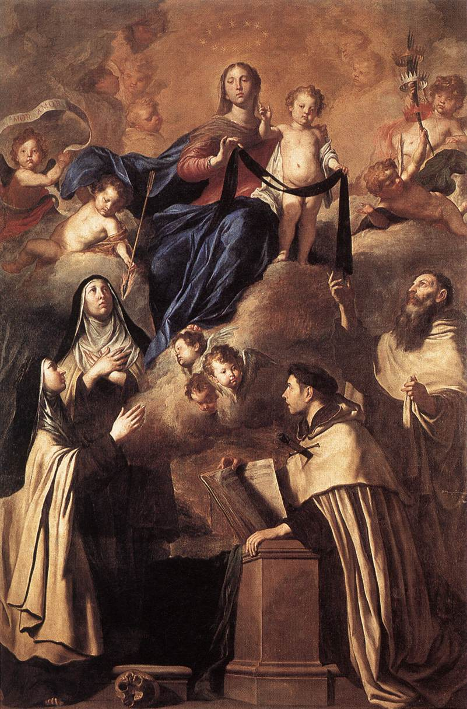
Maria van de Berg Karmel
Wanneer wij ons nu afvragen: waar is de ware Kerk en hoe kunnen wij de ware Kerk trouw blijven?, dan geeft Jezus zelf ons het enige en juiste antwoord: Zie daar uw moeder! (Joh 19,27) Maria is de Moeder van de gesmade en vervolgde Kerk, die zij in haar Onbevlekt Hart draagt, waar zij nooit ten onder kan gaan. Wanneer wij ons aan de Moeder Gods wijden en haar moederlijke aanwijzingen opvolgen, dan leven wij door haar midden in het hart van de ware Kerk en kunnen wij niet dwalen.
Ja, wij zullen na alle lijden en vervolgingen met haar, de overwinnares van alle ketterijen,18 de triomf vieren die zij ons in Fatima beloofd heeft: Uiteindelijk zal mijn Onbevlekt Hart triomferen!
18 De wortel van alle kwaad en van elke ketterij is de geestelijke hoogmoed, die het oog voor de waarheid verdraait en verduistert. Dit feit moest een demon noodgedwongen bevestigen door een bezeten persoon, over wie de bekende exorcist Francesco Bamonte bad: De ziel van die daar (de Moeder Gods) straalt van haar nederigheid. Als jullie nederig waren, dan zouden ook jullie licht uitstralen en iedereen zou het zien. Daarom moet ik jullie ertoe brengen hoogmoedig te zijn, opdat iedereen het zwart van de hel ziet in plaats van het licht van het paradijs. Telkens wanneer zij jullie ervan overtuigt van iets hoogmoedigs af te zien, wint zij een strijd. (Maria im Dienst des Exorzismus van Francesco Bamonte, Imprimatur: Mons. Luigi Moretti, Vicariato di Roma, 20 januari 2010)
De Maagd zonder smet, overwinnares van alle ketterijen, zal niet wijken voor de vijand die zijn hoofd tegen haar opheft. Wanneer zij trouwe dienaren vindt, gehoorzaam aan haar bevel, dan zal zij nieuwe overwinningen behalen, groter dan wij ons maar kunnen voorstellen. H. Maximiliaan M. Kolbe
Genadebewijzen door het scapulier
Uit de geschiedenis van de scapulierbroederschap zijn talloze gebedsverhoringen en reddingen overgeleverd. De volgende gebeurtenissen staan model voor vele andere.
Het scapulier in de nacht van de dood
Toen een jezuïetenpater in een internaat 's avonds de slaapzalen inspecteerde, trof hij een jongen aan die voor zijn bed geknield lag. Op de vraag waarom hij nog niet naar bed was gegaan, antwoordde de kleine: Ik heb de portier mijn scapulier gegeven om te naaien, en ik heb het nog niet terug. Ik durf niet te gaan slapen, uit vrees te sterven zonder mijn scapulier.
Wees niet bang, mijn vriend, zei de pater, men zal het je morgen geven, ga maar naar bed en slaap rustig. Pater, ik kan niet gaan slapen, ik zal misschien nog deze nacht sterven. Daarbij barstte het kind in tranen uit.
Nu ging de pater naar de portier en bracht de kleine zijn scapulier. Blij en gerustgesteld kuste het kind zijn kostbare schat en viel in slaap. De volgende morgen zag de pater dat de jongen nog niet was opgestaan. Hij riep hem, maar kreeg geen antwoord. Het brave kind was in de nacht gestorven.
Het had zijn scapulier gekust tot het in slaap was gevallen, en hield het nog tegen de glimlachende lippen gedrukt.19
19 Tragt das Skapulier!
Maagd en Moeder Gods, o Maria mijn, laat mij geheel de Uwe zijn.
De Uwe in het leven, de Uwe in de dood, de Uwe in ongeluk, angst en nood.
De Uwe in het kruis en bitter leed, de Uwe voor tijd en eeuwigheid.
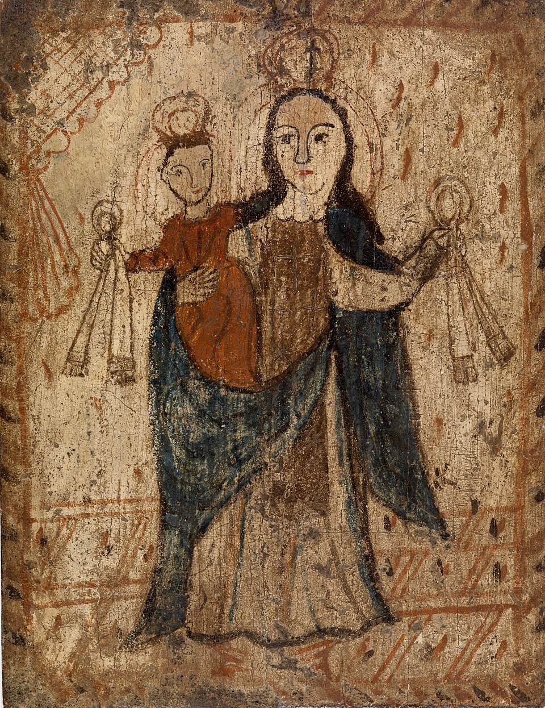
Scapuliermadonna
Het verborgen scapulier
Toen Teresa, de vriendin van Rose Hu, om haar katholieke geloof in een gevangenis in Sjanghai gevangen zat, moest zij haar cel delen met een heks. Deze vrouw vertelde haar dat zij door meerdere demonen bezeten was, die haar toestonden met de doden te spreken. Zij verdiende daarmee een tijd lang haar geld, maar deze contacten lieten haar ontredderd en uitgeput achter.
Op een winterdag beefde zij van kou, omdat zij niet genoeg kleding had. Teresa had medelijden met haar en dekte de vrouw toe met haar mantel.
Binnen enkele seconden begon de vrouw zo luid te schreeuwen als zij maar kon. Iedereen in de cel schrok. Twee minuten later zweeg de vrouw weer, en zij vertrouwde Teresa toe dat zij nu van de demonen vrij was.
Zij vroeg Teresa of er iets bijzonders aan de mantel was, en deze antwoordde dat het om een heel gewone mantel ging.
Toen Teresa haar mantel later toch nog zorgvuldig inspecteerde, ontdekte zij dat haar moeder een bruin scapulier in de voering had genaaid. Na deze ervaring vond de vrouw de weg naar het katholieke geloof.20
20 Rose Hu, Mit Christus im chinesischen Straflager, Bobingen 2024.
De leeuw kan de haan niet uitstaan, de bijen verafschuwen de olie, de slangen de wijnruit, de nachtuil verafschuwt het licht, de mestkever mag de rozen niet, en de duivels kunnen het scapulier niet uitstaan! Abraham a Sancta Clara21
21 De hoogbegaafde Ongeschoeide Augustijn Abraham a Sancta Clara (1644-1709) kwam uit Baden-Württemberg en werd vanwege zijn schitterende redenaarstalent en zijn grote liefde voor de waarheid door Leopold I tot keizerlijk hofprediker benoemd.
Een afvallige priester bekeert zich
Op 5 mei 1933 stierf in Aigen bij Salzburg de afvallige priester Johann Kirchsteiger. Hij had veel tegen de Kerk gewerkt, als schrijver en rondtrekkend spreker, en had zich vooral gemengd in de katholieke huwelijksleer. Velen heeft hij door zijn dispensaties in concubinaat gedreven, vele gezinnen ongelukkig gemaakt.
Eén ding had hij echter behouden: ook als afvallige priester droeg hij het scapulier, waardoor Maria hem de genade van de bekering verwierf.
Toen de 79-jarige op sterven lag, keerde hij berouwvol tot de Kerk terug en verzoende hij zich nog met God. Na de ontvangst van de heilige sacramenten voor de stervenden overleed hij.22
22 Tragt das Skapulier!
Ach, met welke liefde en tederheid omarmt God een zondaar wanneer deze tot Hem terugkeert. H. Don Bosco
Het scapulier is ook een herinnering aan ons doopkleed. Dit stelt het feestgewaad voor dat de barmhartige Vader aan Zijn thuisgekeerde kinderen aanbiedt. Philippe de Jésus-Marie OCD
De musketkogel in de borst
In het jaar 1648, bij het beleg van de stad Ieper door de Fransen, kreeg de kapitein van het regiment van Lombay een musketkogel in de borst. Gelukkig werd de kogel op zijn scapulier platgedrukt, en hij werd niet in het minst gewond. Men vond de platte kogel in zijn kleren. Tot bewondering van alle aanwezigen droeg de afgeplatte kogel de afdruk van het beeld van de Allerzaligste Maagd en van het Kindje Jezus.23
23 Tragt das Skapulier!
Draag op je borst het heilige scapulier van de Berg Karmel. H. Josemaría Escrivá
Het kleed van Maria beschermt tegen ongeluk
Op 8 mei 1842 vatte in Frankrijk een volle treinwagon tijdens de snelle rit vlam. Het duurde geruime tijd voordat men vooraan op de locomotief het verschrikkelijke ongeluk opmerkte en de trein stopte. Het geschreeuw van de inzittenden was niet gehoord.
Toen de trein tot stilstand was gebracht, werden de gewonde passagiers onmiddellijk eruit gehaald. Allen hadden zwaardere of lichtere brandwonden opgelopen en moesten naar het ziekenhuis worden gebracht. Slechts één enkele was tot ieders verbazing zonder enig letsel ervan afgekomen.
Men vroeg hem naar de oorzaak van deze opvallende, ja zelfs wonderbaarlijke redding. Hij antwoordde: Ik kan mij geen andere voorstellen dan deze. Daarbij wees hij op het scapulier dat hij droeg. Sinds ik dit draag, vervolgde hij, beveel ik mij dagelijks aan haar bijzondere bescherming aan. En inderdaad, hij was de enige onder alle passagiers die met dit kleed van de Moeder Gods bekleed was.24
24 Das Kleid vom Himmel.
Ter dood veroordeeld
In het jaar 1625 voltrok zich in Italië een wonder met het scapulier van de Berg Karmel, dat in heel Italië voor de grootste opschudding zorgde en dat doorslaggevend was voor een grote populariteit van het scapulier:
In het jaar 1620 werd Battista Bosio beschuldigd twee edelen vermoord te hebben. Hij had deze schanddaad in opdracht van zijn heer uitgevoerd. Na enige tijd in de gevangenis bereute hij zijn daad en bekeerde zich. Hij riep de Moeder Gods van de Berg Karmel aan en bereidde zich voor op de ontvangst van het scapulier door elke woensdag en zaterdag in de gevangenis te vasten. Gedurende drie jaar hield hij trouw vast aan zijn voornemens. Hij smeekte de Moeder Gods van de Berg Karmel hem toch uit zijn ellendige toestand te verlossen. Via een van zijn vrienden had hij een afbeelding van de scapuliermadonna ontvangen.
Toen hij ter dood veroordeeld werd, stond Battista Bosio erop het scapulier te krijgen. Op zijn verzoek kwam de pater van de Karmel in Cremona en legde hem het scapulier op. Het doodvonnis door ophanging werd op zaterdag 22 maart 1625 vastgesteld. De beul bond met twee sterke touwen de berouwvolle boosdoener aan een zeer hoge galg. Maar het eerste touw brak op meerdere plaatsen. Nadat de beul de ladder had weggetrokken, brak ook het tweede touw.
De berouwvolle zondaar viel van de hoogte van de galg op de harde stenen vloer. Hij voelde geen pijn. De omstanders stormden op de kennelijk door de Moeder Gods beschermde af. Ontroerd erkenden zij een ingrijpen van de hemel, en de ter dood veroordeelde werd gratie verleend. Door dit wonder werd het scapulier in heel Italië bekend en geliefd.25
25 Tragt das Skapulier!
Kijk eens naar de jasmijnstruik. Hij geeft de beste geur af wanneer de zon ondergaat. Zo is ook het heilige scapulier. Het helpt nooit beter dan in het uur van de dood, wanneer immers het leven ondergaat. Abraham a Sancta Clara
Het getuigenis van Petrus Molles
In het jaar 1636 leidde een man genaamd Petrus Molles uit Spanje een goddeloos leven. Daardoor verloor hij de genaden en weldaden van zijn eigen ouders en werd hij geheel berooid. Daarop raakte deze verloren zoon in zulk een wanhoop dat hij bij zichzelf besloot een einde aan zijn leven te maken.
Toen hij nu met een strop om de hals een ladder wilde beklimmen om zich daarvan te laten vallen, werd hij door een onzichtbare macht tegengehouden. Omdat hij echter koppig aan zijn goddeloze voornemen vasthield, verscheen hem de boze vijand. Deze raadde hem aan het stukje stof van het scapulier opzij te leggen, anders kon hij hem niet tot zijn einde helpen, waarover de arme drommel ontsteld was. Hij berouwde al zijn zonden uit ganser harte en veranderde zijn levenswandel.26
26 Ibid.
Het scapulier op het sterfbed
Don Francisco Zaldúa, voormalig president van de Republiek Colombia, was een uitmuntend jurist, maar tegelijk een verbitterd vijand van de katholieke Kerk. Steeds volgde hij het vaandel van de liberalen. Hij was een van de belangrijkste agitatoren bij de verdrijving van de jezuïeten en de vervolging waaraan zij waren blootgesteld.
Zijn zoon genoot in Rome een voortreffelijke opvoeding en had een bijzonder grote devotie tot de zaligste Maagd, die hij voortdurend om de bekering van zijn vader bad, vooral nadat hij tot priester was gewijd. Don Zaldúa werd levensgevaarlijk ziek, en alles wat de vrome priester deed om de bekering van zijn vader te verkrijgen, was tevergeefs. Toen wendde hij zich tot Maria, de Toevlucht der zondaars.
Toen de toestand van zijn vader zo verslechterde dat de dood onafwendbaar leek, verdubbelde hij zijn gebeden. Hij begaf zich naar het sterfbed van de ongelukkige en zei tot hem: Vader, alle menselijke hulpmiddelen zijn tevergeefs. Wilt u de werkzaamheid van een bovennatuurlijk geneesmiddel niet beproeven? – Wat voor een medicijn? – Dat u het scapulier ontvangt en draagt.27
De oud-president nam het aanbod aan, boog het hoofd om het scapulier te ontvangen, en vroeg waartoe het scapulier hem verplichtte. – Dat u een goede biecht aflegt. Toen beefde de arme stervende van angst, maar na een korte tijd zei hij: Goed, roept een priester! Nadat hij een berouwvolle biecht had afgelegd, verklaarde hij met luide stem dat hij als een ware zoon van de katholieke Kerk wilde sterven.28
27 Door de mond van bezetenen moest de hel openbaren dat geen priesters haar meer schaden dan zij die de devotie tot Maria en het heilige scapulier verspreiden. Zo riep eens uit een bezetene een demon uit: O kleed, hoeveel zielen hebt u mij en de hel ontrukt! (Das Schutzkleid Mariä)
28 Ibid.
De boze vijand is als een sperwer, die steeds de onschuldige duiven belaagt. Hij is als een wolf, die voortdurend watertandt naar lammeren. Hij is als een schorpioen, die altijd van gif is voorzien. Ook een hond is hij, die nooit slaapt. Maar nooit waakt en tracht hij meer, en nooit brult hij meer, dan in het uur van onze dood. Abraham a Sancta Clara
Zegening en oplegging van het bruine scapulier
Formula brevior. De priester draagt over de soutane een koorhemd en een witte stola.
V. Osténde nobis, Dómine, misericórdiam tuam.
Toon ons, Heer, Uw barmhartigheid.
R. Et salutáre tuum da nobis.
En schenk ons Uw heil.
V. Dómine, exáudi oratiónem meam.
Heer, verhoor mijn gebed.
R. Et clamor meus ad te véniat.
En laat mijn roepen tot U komen.
V. Dóminus vobíscum.
De Heer zij met u.
R. Et cum spíritu tuo.
En met uw geest.
Orémus.
Dómine Iesu Christe, humáni géneris Salvátor, hunc hábitum, quem propter tuum tuǽque Genetrícis Vírginis Maríæ de Monte Carmélo amórem servi tui (ancíllæ tuæ) devóte sunt delatúri (-æ) déxtera tua sanctí † fica, et eádem Genetríce tua intercedénte, ab hoste malígno defénsi (-æ) in tua grátia usque ad mortem persevérent: Qui vivis et regnas in sǽcula sæculórum. R. Amen.
Laten wij bidden.
Heer Jezus Christus, Verlosser van het mensdom, heilig met Uw rechterhand dit kleed, dat Uw dienaren uit liefde tot U en tot Uw maagdelijke Moeder Maria van de berg Karmel vroom willen dragen, opdat zij, door de voorspraak van Uw Moeder beschermd tegen de boze vijand, tot de dood in Uw genade volharden. Gij die leeft en heerst in alle eeuwigheid. R. Amen.
Hij besprenkelt de scapulieren met wijwater en legt ze ieder afzonderlijk op, terwijl hij zegt:
Accipe hunc hábitum benedíctum precans sanctíssimam Vírginem, ut eius méritis illum pérferas sine mácula, et te ab ómni adversitáte deféndat, atque ad vitam perdúcat ætérnam. R. Amen.
Ontvang dit gezegende kleed en bid de allerzaligste Maagd, opdat gij het door haar verdiensten onbevlekt draagt en zij u tegen elke tegenspoed beschermt en u tot het eeuwig leven voert. R. Amen.
Nadat allen het scapulier hebben ontvangen, spreekt hij:
Ego, ex potestáte mihi concéssa, recípio te (vos) ad participatiónem ómnium bonórum spirituálium, quæ, cooperánte misericórdia Iesu Christi, a Religiósis de Monte Carmélo peragúntur. In nómine Patris, et Fílii, † et Spíritus Sancti. R. Amen.
Krachtens de mij verleende bevoegdheid neem ik u op in de deelname aan alle geestelijke goederen die met de hulp van de barmhartigheid van Jezus Christus door de leden van de Karmelietenorde worden verworven. In de naam van de Vader en de Zoon en de Heilige Geest. R. Amen.
Bene † dícat te (vos) Cónditor cæli et terræ, Deus omnípotens, qui te (vos) cooptáre dignátus est in Confraternitátem beátæ Maríæ Vírginis de Monte Carmélo: quam exorámus, ut in hora óbitus tui (vestri) cónterat caput serpéntis antíqui, atque palmam et corónam sempitérnæ hereditátis tandem consequáris (consequámini). Per Christum Dóminum nostrum. R. Amen.
Moge u zegenen de Schepper van hemel en aarde, de almachtige God, die u in Zijn genade heeft geroepen tot de Broederschap van de Allerzaligste Maagd Maria van de berg Karmel. Wij smeken haar, dat zij in het uur van uw dood de kop van de oude slang vertrappe, opdat gij ten slotte de palm en de kroon van het eeuwig erfdeel moogt verwerven. Door Christus, onze Heer. R. Amen.
Hij besprenkelt de persoon met wijwater.
Gebed tot de Koningin van de Karmel
O Allerzaligste, onbevlekte Maagd, Sieraad en Luister van de berg Karmel, Gij die met een bijzonder genadig aanschijn neerziet op hen die met Uw eerbiedwaardig kleed zijn bekleed, zie ook mij goedertieren aan en neem mij op onder de mantel van Uw moederlijke bescherming. Versterk toch mijn zwakheid met Uw macht; verlicht de duisternis van mijn hart met Uw wijsheid; vermeerder in mij het geloof, de hoop en de liefde. Tooi mijn ziel zozeer met genaden en deugden, dat zij steeds Uw goddelijke Zoon en U dierbaar zij. Sta mij bij in het leven, troost mij in de dood met Uw zoetste tegenwoordigheid en stel mij aan de Allerheiligste Drievuldigheid voor als Uw kind en Uw getrouwe dienaar, opdat ik U dan eeuwig in de hemel kan loven en prijzen. Amen.
Driemaal Weesgegroet en eenmaal Eer aan de Vader.
(Aflaatgebed van Paus Leo XIII.)
Voorwaar, een grote genade van het scapulier: deelachtig te worden aan alle gebeden, nachtwaken, aalmoezen, vasten, heilige missen, bedevaarten, versterving, boetewerken, alle moeiten die verdragen worden, tot het vergieten van bloed toe, evenals het verlies van het leven onder de ongelovigen voor de verbreiding van het geloof, in het algemeen al het goede dat in de hele wereld in zovele Karmelietenkloosters door bemiddeling van de zaligste Maagd geschiedt. Pater Grossi, auteur van het Romeinse broederschapsboekje
Het scapulier, de rozenkrans en de Wonderdadige Medaille: dat zijn drie dingen die de Immaculata zelf heeft aangeboden voor het heil van de mensen. H. Maximiliaan Maria Kolbe